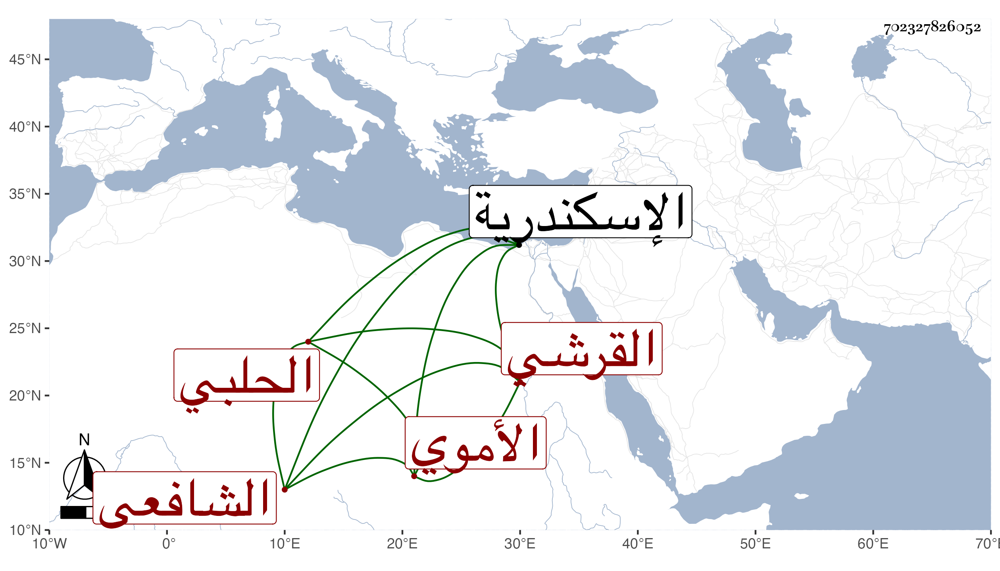

0902Sakhawi.DawLamic.ITO20230111-ara1.EIS1600.702327826052
Biography ID: 702327826052
242
أحمد بن القاضي أبي جعفر محمد بن أحمد بن عمر بن الضياء محمد بن عثمان الشهاب القرشي الأموي الحلبي الشافعي أخو علي الآتي ويعرف كسلفه بابن العجمي وهو بابن أبي جعفر . ولد بعيد الأربعين وثمانمائة وقرأ القرآن والمنهاج وغيره وعرض واشتغل يسيرا وسمع معي اليسير ببلده على أخته عائشة وغيرها وصاهر أبا ذر بن البرهان الحلبي على ابنته عائشة وما سلك الطريق المرضي بحيث أملق جدا . ومات بالاسكندرية بعد أن عمل حارسا ببعض حماماتها في أواخر سنة سبع وثمانين أو أوائل التي بعدها .
